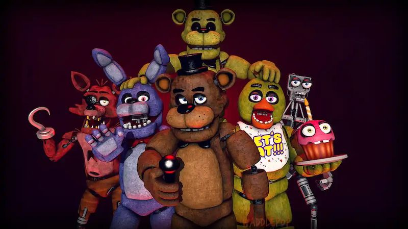

FNAF is an indie horror video game series that was released on August 8th of 2014. The main objective of the game is to spend 5 nights in "Freddy Fazbears Pizza" and avoid being attacked by the animatronics. The main challenge is rationing the battery power that controls the security cameras and lights. The game itself is entertaining to play, but personally, my favourite part is the lore surrounding the plot. The story begins with 2 friends, Henry and William, opening up a diner with animatronics. They both enjoyed the craft but William wanted to use the animatronics to lure children and ultimately, murder them. He kept this a secret and managed to capture and kill 5 children, who end up posessing the 5 main costumes. The spirits of those childrem seek revenge and possess the suits at night. These are the same characters you are meant to escape in the game when you work the night shift. The only way to win the game is to survive until 6 am for 5 consecutive nights. FNAF is particualrly fun to play when you understand the plot enough to notice little easter eggs throughout the game.
| Game | Release Date | My Rating |
|---|---|---|
| Five Nights at Freddy's | 2014-08-08 | 7/10 |
| Five Nights at Freddy's 2 | 2014-11-11 | 6/10 |
| Five Nights at Freddy's 3 | 2015-03-02 | 4/10 |
| Five Nights at Freddy's 4 | 2015-06-23 | 8/10 |
| Security Breach | 2021-12-16 | 9/10 |
If you want to learn more about the lore, check out
this link!
https://www.youtube.com/watch?v=6fqW3GYAd2c